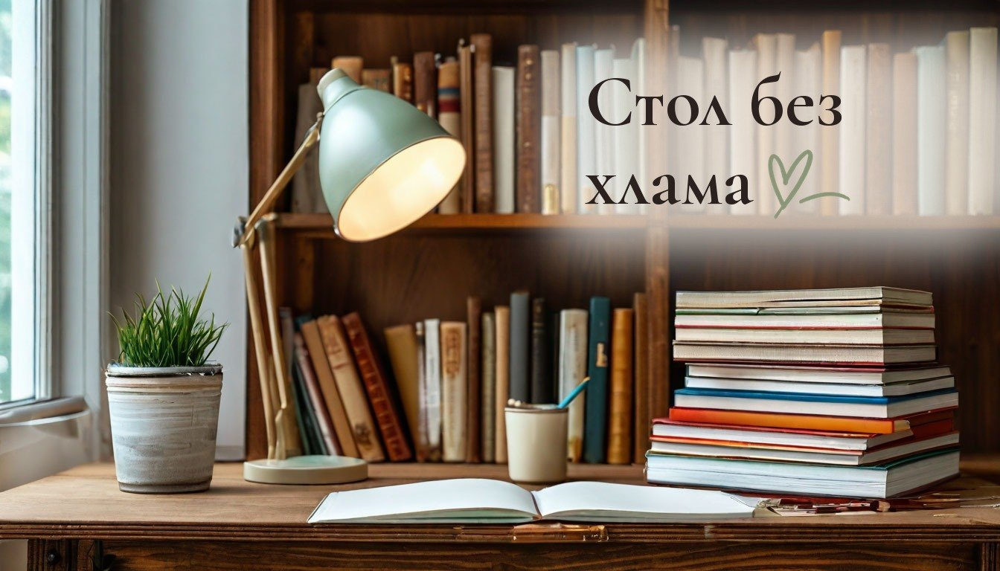
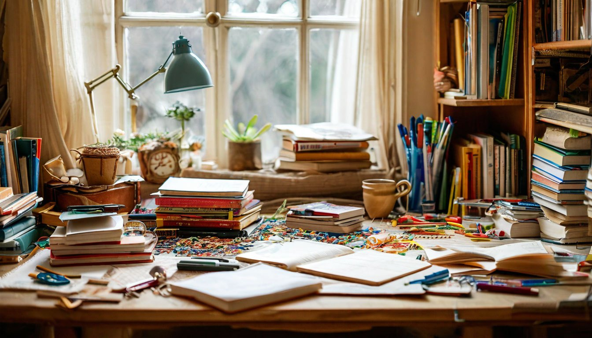
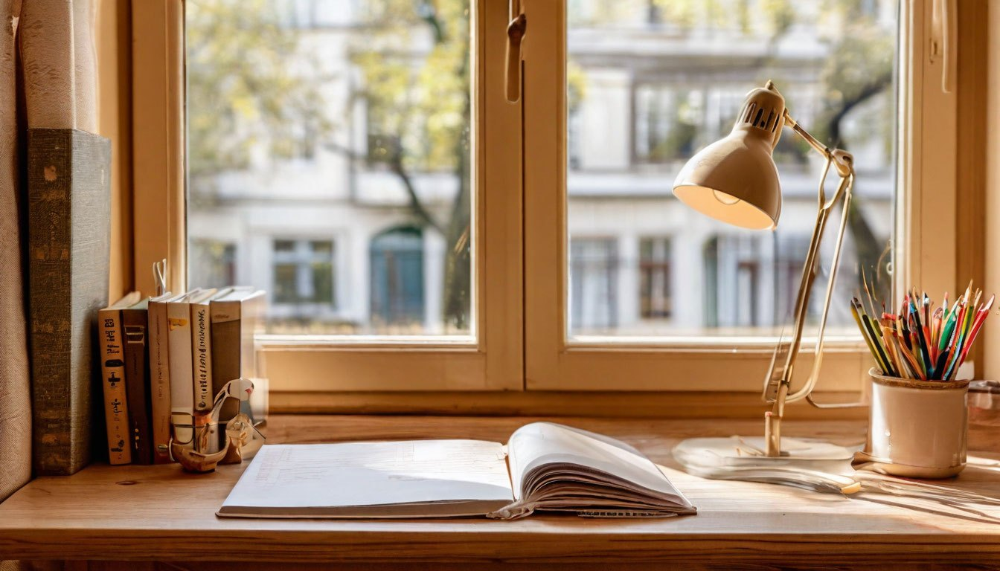

Рабочее место школьника дома: как убрать хлам со стола за 5 шагов

В понедельник письменный стол был чистым. К четвергу на нём лежат тетради за три предмета, обёртка от конфеты, детали конструктора, засохший фломастер и кошка, которая решила, что это её место.
Рабочее место школьника захламляется не от лени ребёнка. На столе просто нет мест для того, чем он пользуется каждый день, и всё оказывается в одной куче. Дочке у меня десять, она в четвёртом классе, а сын через год пойдёт в первый, так что второй стол нам скоро понадобится тоже.
Это третья история из серии «Дом, где двое детей, кошка и хомяки». Вот пять шагов, которые помогают столу оставаться столом.

Шаг 1: всё, что не для уроков, убрать со стола
Игрушки, коллекции, поделки, бутылки воды и чашки. Каждая вещь, не нужная для домашнего задания, отвлекает и занимает место для тетради. Особенно телефон: если он лежит на столе экраном вверх, уроки растягиваются на весь вечер.
Что делать: поставить рядом со столом одну коробку для «не учебного». Всё, что найдено на столе, отправляется туда, а разбирают её раз в неделю. Так ничего не теряется, но и не мешает прямо сейчас.
Шаг 2: у ручек и карандашей свой домик
Ручки, карандаши, линейка, ластик разлетаются по столу первыми, потому что их некуда сложить. Пенал в рюкзаке дома неудобен: его каждый раз нужно доставать.
Что делать: поставить на стол один стакан или органайзер для всего пишущего. Засохшие фломастеры и сломанные карандаши выбрасывать сразу, не возвращая в стакан. Рядом удобно держать маленький лоток для тетрадей, которые нужно сдать завтра.
Шаг 3: учебники по расписанию, а не стопкой
Самый неочевидный шаг. Когда все учебники лежат одной стопкой на столе, нужный приходится вытаскивать снизу, и стопка разваливается. А вечером всё снова оказывается на столе, потому что так быстрее.
Что делать: повесить над столом полку и ставить учебники вертикально, корешками наружу, в порядке расписания. Вечером ребёнок собирает портфель, просто снимая книги по дню недели. Расписание можно приклеить к краю полки, тогда ничего не забудется.

Шаг 4: свет с правильной стороны
Это не про хлам, но про то, почему ребёнок не любит сидеть за столом. Если правше свет падает справа, рука отбрасывает тень на тетрадь, и делать уроки неудобно. Тогда ребёнок перебирается на диван или на кровать, а стол превращается в склад.
Что делать: для правши ставить лампу слева, для левши справа. Стол лучше развернуть так, чтобы дневной свет из окна тоже падал с нужной стороны. Лампа с тёплым светом подходит для вечера лучше, чем холодная белая.
Шаг 5: пять минут вечером на разбор
Стол захламляется не за один день, а постепенно, по одной вещи. Если каждый вечер возвращать всё на места, утром не придётся начинать с раскопок.
Что делать: после уроков, когда собран портфель, пять минут разобрать стол вместе с ребёнком. Ластик в стакан, учебники на полку, лишнее в коробку. Через пару недель это становится привычкой, как почистить зубы.
От автора
Мне кажется, порядок на детском столе невозможен раз и навсегда, и это нормально. Это рабочее место живого человека, на нём будут и рисунки, и наклейки, и крошки от печенья.
Но когда у каждой вещи есть свой дом, вечерняя уборка занимает пять минут вместо получаса и ругани. А кошка, как ни старайся, всё равно будет лежать на тетрадях. С этим я уже смирилась.
Подписывайтесь, чтобы не пропустить следующий разбор: как ухаживать за пальто из шерсти, чтобы к ноябрю оно не выглядело уставшим.
А где ваш школьник на самом деле делает уроки: за столом или где придётся?